발행일: 2026년 4월 23일 대상 버전: frontend 0.0.0, backend 1.0.0 접속 주소 예시: http://localhost:3000
본 매뉴얼은 ACS 시스템의 화면별 사용법을 실제 렌더링된 UI 스크린샷과 함께 설명합니다.
/login 경로에서 관리자 계정으로 로그인합니다.
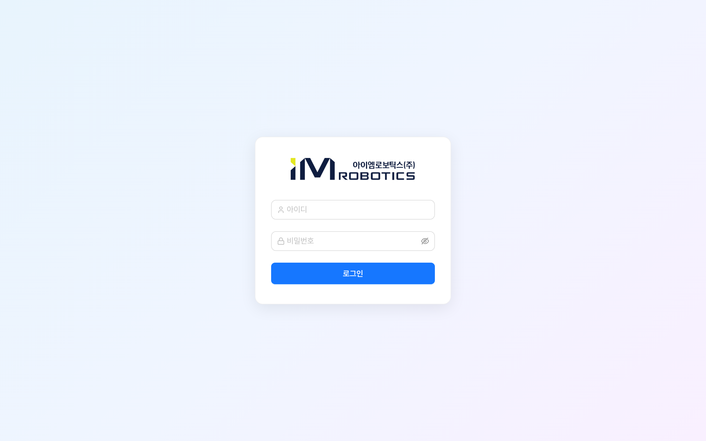
로그인 페이지 초기 화면
아이디와 비밀번호를 입력하고 로그인 버튼을 클릭합니다.
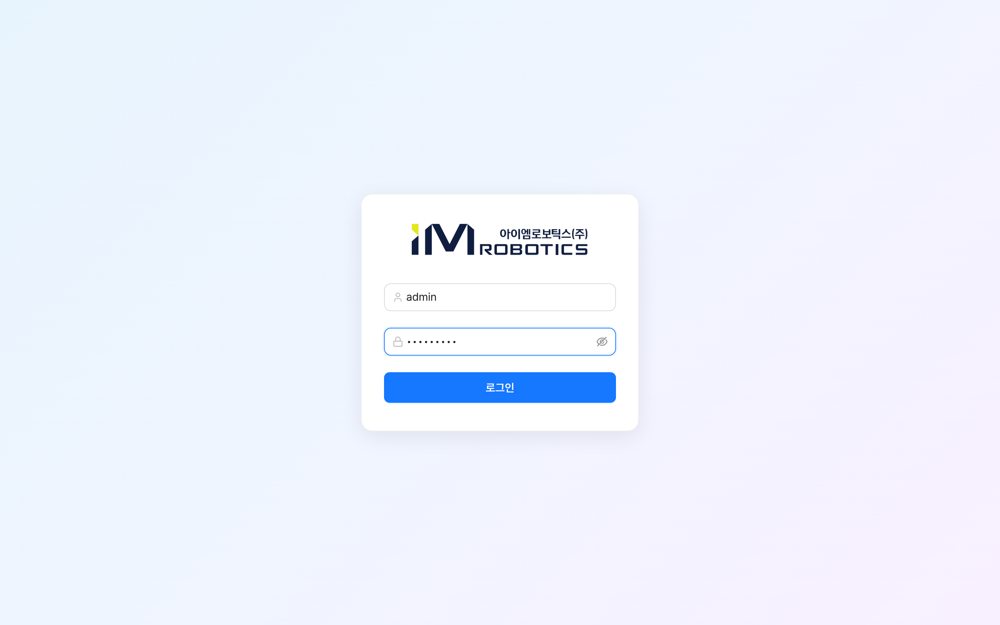
아이디/비밀번호 입력 완료
/ (대시보드)로 이동합니다. role === 'admin' 계정만 사이드바(맵 관리 / 통신 로그 / 설정)가 표시됩니다.대시보드는 상단의 AMR 가로 리스트와 하단의 맵 캔버스로 구성됩니다.
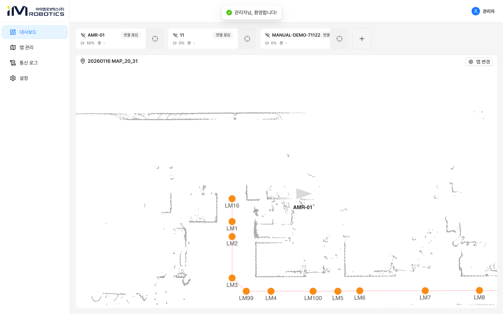
대시보드 전체 레이아웃
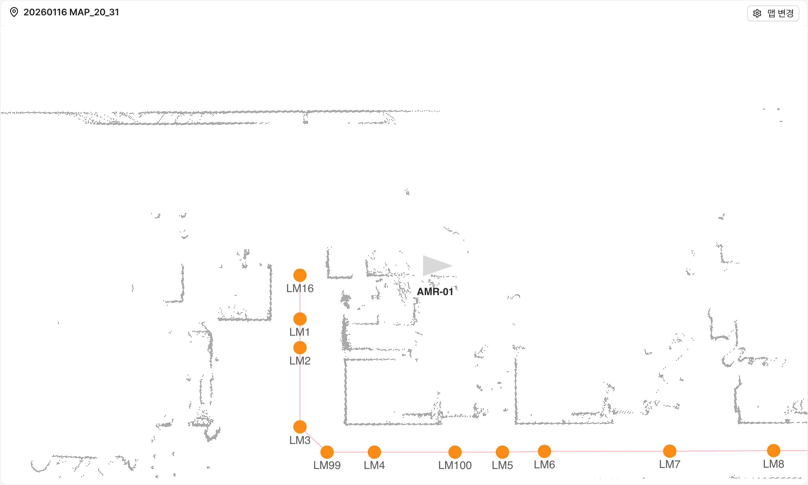
지도 캔버스
대시보드 상단의 + 버튼(점선 테두리)을 클릭합니다.
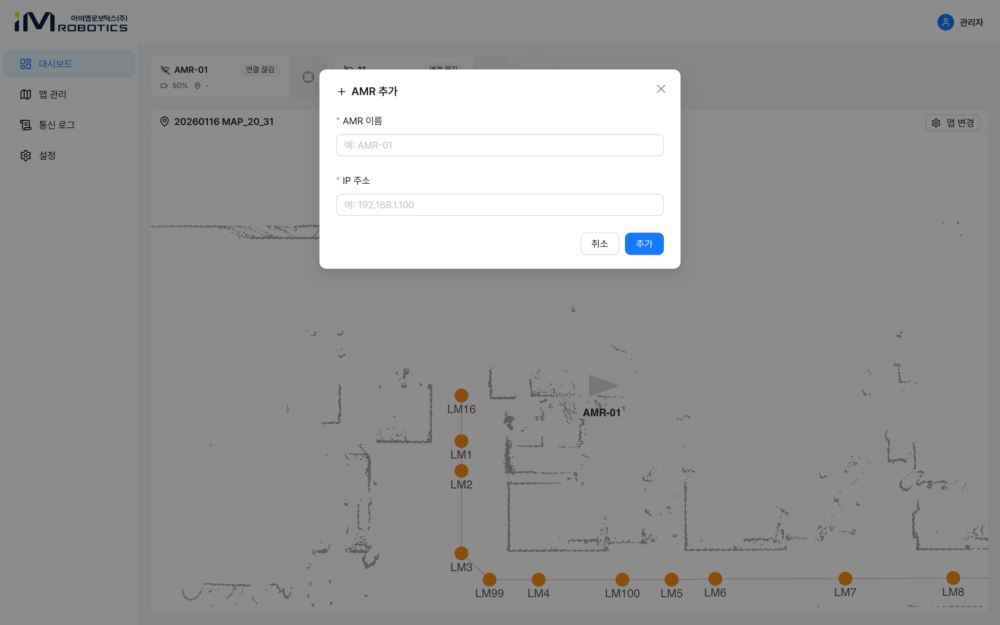
AMR 추가 모달 초기 상태
AMR 이름과 IP 주소를 입력합니다.
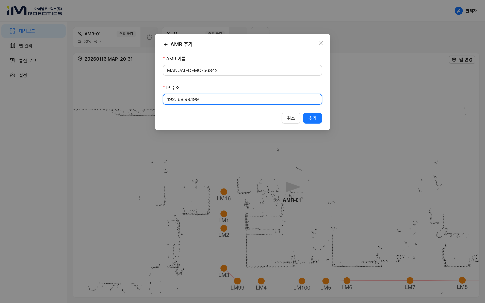
입력 완료
POST /api/amr 요청이 전송되고, 초기 상태는 NO_CONN으로 등록됩니다.IDLE / MOVING / STOP / ERROR / E-STOP 등으로 갱신됩니다.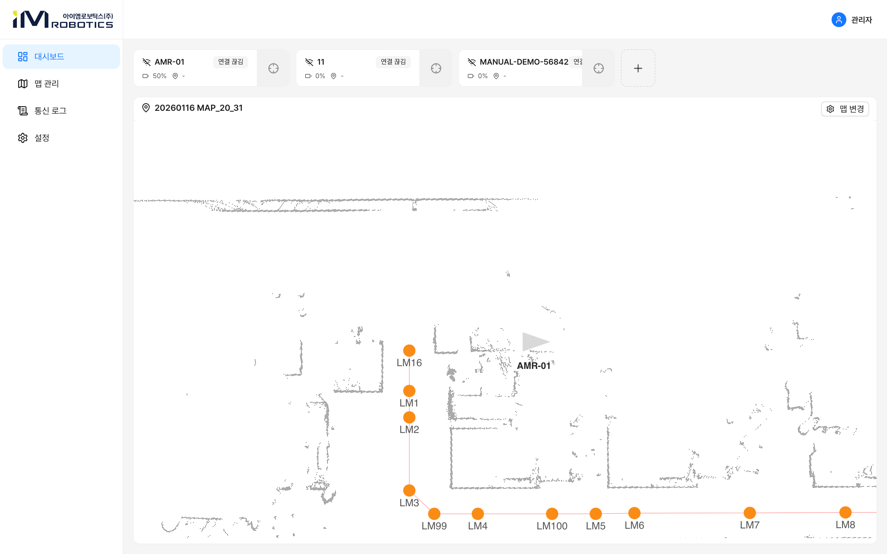
추가 완료 화면
상단 리스트에서 AMR 카드의 정보 영역(좌측, 추적 버튼이 아닌 부분)을 클릭하면 상세 모달이 열립니다.
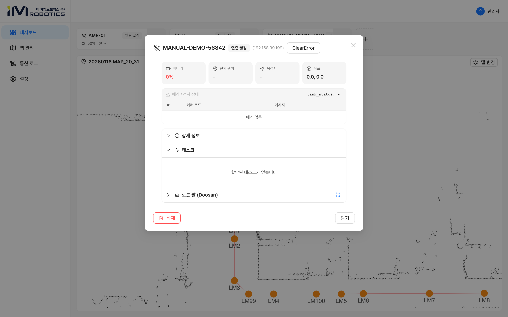
AMR 상세 모달
모달은 다음 섹션으로 구성됩니다:
x, y).stop_code, task_status_raw를 표시. 이슈가 있으면 붉은 톤으로 강조됩니다.RUNNING 태스크는 좌측 파란색 바로 강조되고 상단에 뱃지 카운트가 뜹니다. 20건을 넘으면 “이전 태스크 N건 더보기” 버튼으로 확장 가능.상세 모달 하단 좌측의 빨간색 삭제 버튼을 누르면 확인 Popconfirm이 표시됩니다.
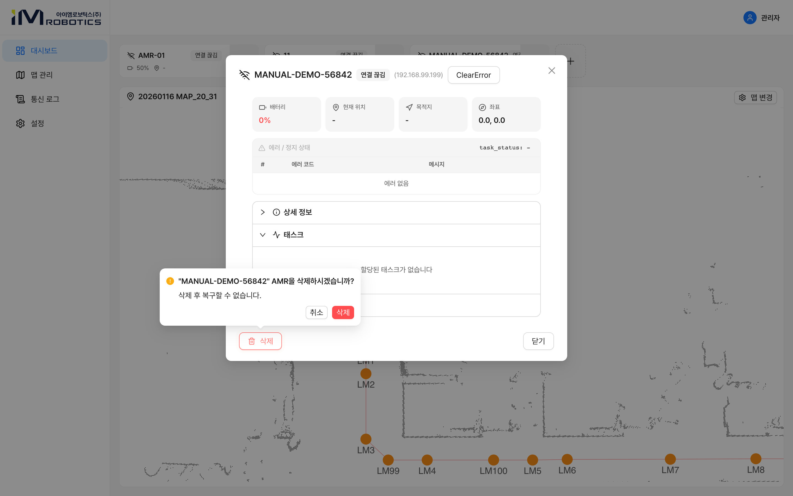
AMR 삭제 확인
삭제를 최종 확인하면 DELETE /api/amr/:id가 호출되고, 리스트에서 해당 AMR이 사라집니다.
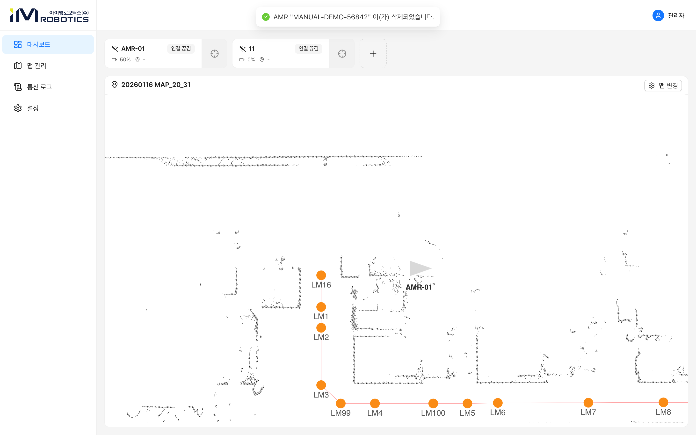
삭제 완료
⚠️ 삭제 후에는 복구할 수 없습니다. 해당 AMR의 기존 태스크 이력은 DB에 남아있을 수 있습니다.
AMR을 특정 스테이션으로 보내는 방법은 두 가지입니다.
POST /api/amr/:id/navigate를 호출해 이동 명령을 전송하고, 성공 시 상단 토스트에 “<AMR 이름> → <스테이션> 이동 명령 전송 완료” 메시지가 표시됩니다.ℹ️ 빈 공간이 아닌 스테이션 위에서 우클릭해야 메뉴가 뜹니다.
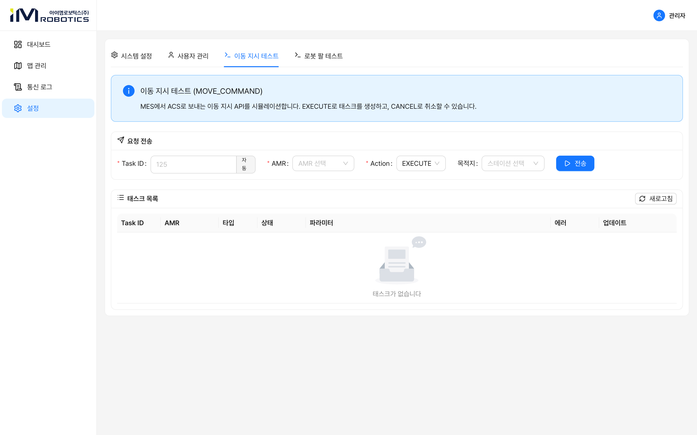
설정 > 이동 지시 테스트
EXECUTE — 태스크 생성 및 이동 시작. CANCEL — 해당 Task ID 태스크 취소.POST /api/move-command가 호출되고, 하단에 result_msg와 server_time이 표시됩니다.AMR 상세 모달의 태스크 섹션에서 해당 AMR에 할당된 최근 태스크를 확인할 수 있습니다. 각 행은 Task ID, 타입(MOVE/ARM), 상태(PENDING/RUNNING/DONE/FAILED/CANCELED), 에러 코드, 생성 시각을 표시합니다.
태스크 목록 표시
태스크를 삭제(취소)하려면 해당 태스크의 Task ID를 그대로 넣고 Action을 CANCEL로 바꿔 전송합니다.
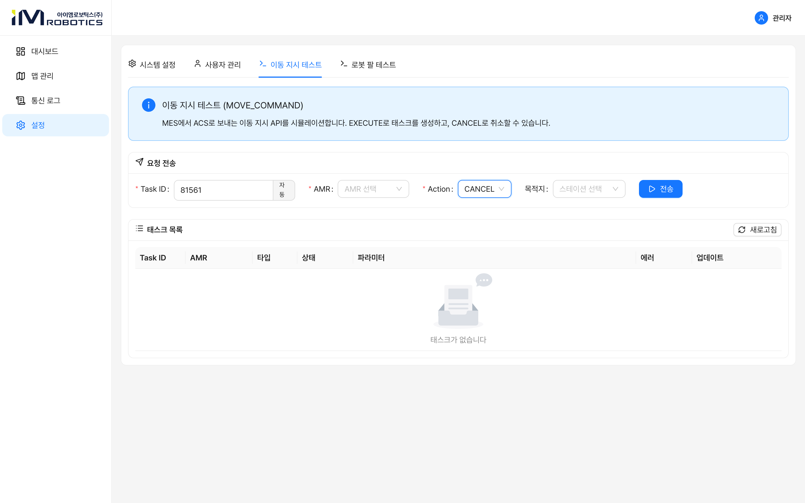
CANCEL 요청 폼
EXECUTE로 만들어진 태스크라도 RUNNING 중간에 CANCEL을 보내면 백엔드가 태스크를 중단 처리하고 상태가 CANCELLED로 바뀝니다.CANCEL을 전송합니다.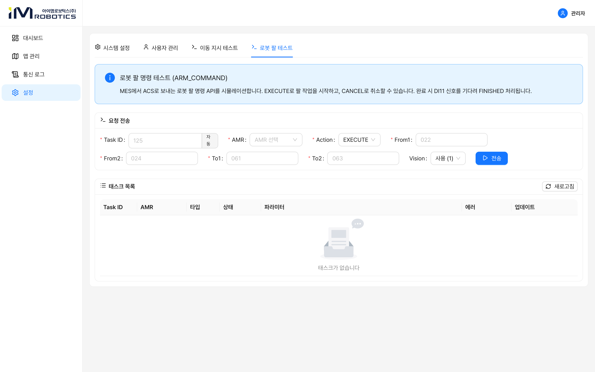
설정 > 로봇 팔 테스트
관리자 계정만 접근 가능합니다. 좌측 사이드바에서 맵 관리를 선택합니다.
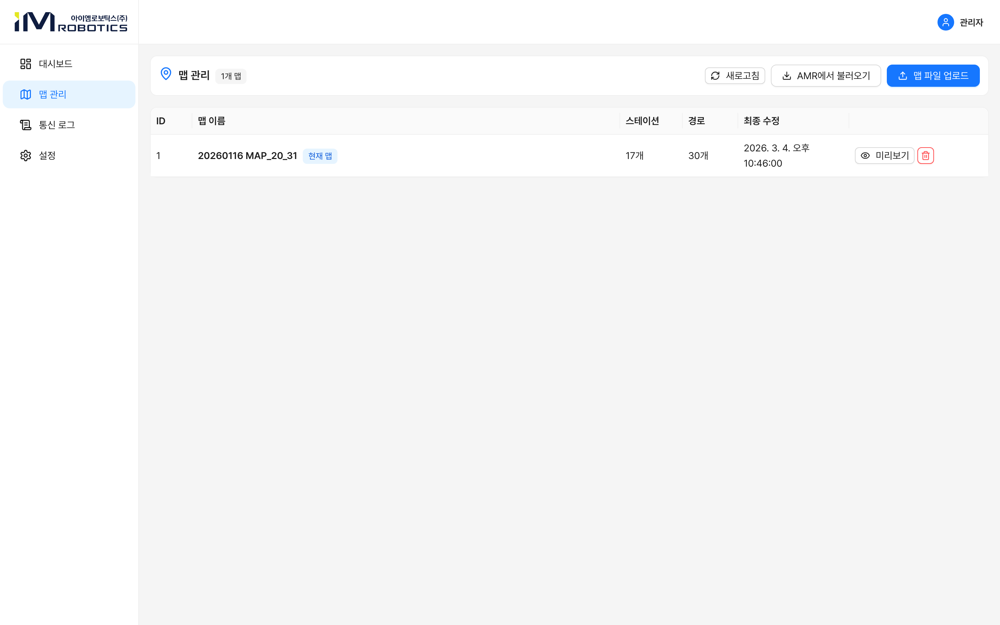
맵 관리 페이지
.json 또는 .smap 파일 업로드. 업로드 즉시 목록에 추가되며, DB에 스테이션/경로 정보가 함께 저장됩니다.관리자 전용. ACS 서버가 MES/로봇과 주고받은 요청/응답 로그를 확인합니다.
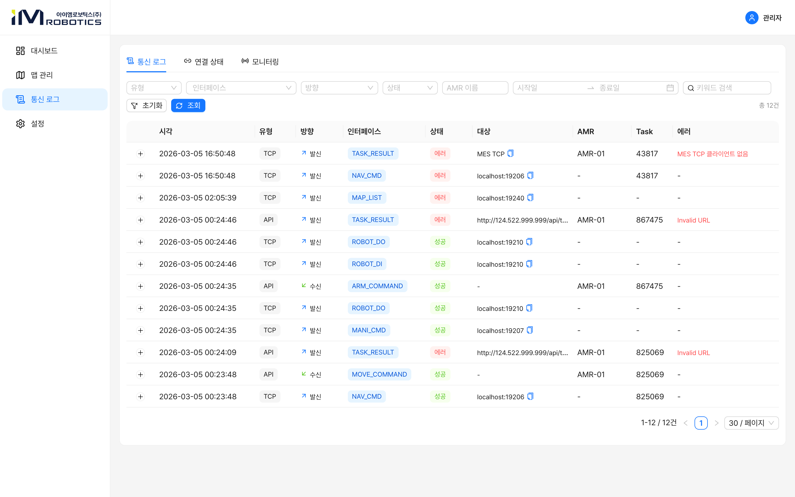
통신 로그 페이지
관리자 전용. 4개의 탭이 있습니다.
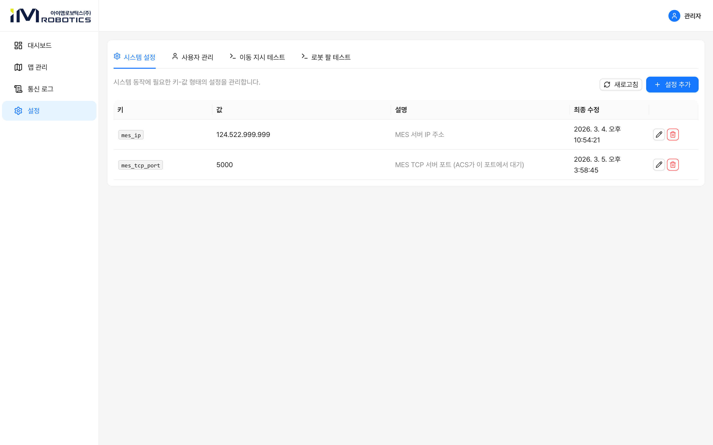
시스템 설정 탭
키–값 형태로 시스템 동작에 필요한 파라미터(예: mes_ip, 폴링 주기, 타임아웃 등)를 관리합니다. 설정 추가 / 수정(연필 버튼) / 삭제(휴지통) 기능을 제공합니다.
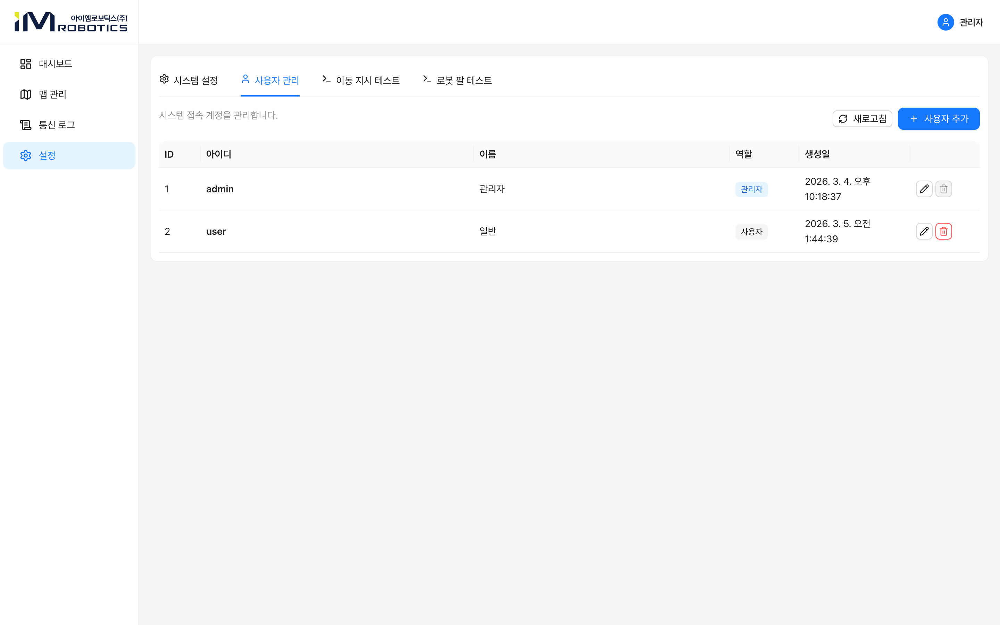
사용자 관리 탭
admin 또는 user. 일반 사용자는 대시보드만 볼 수 있습니다.admin 계정은 삭제할 수 없도록 보호되어 있습니다.앞서 6. AMR 이동 명령, 7. 태스크 확인/취소에서 설명한 MOVE_COMMAND 시뮬레이터입니다.
로봇 팔 테스트 탭
ARM_COMMAND(로봇 팔 이송 작업)를 시뮬레이션합니다. 입력 파라미터는 from_location_id1/2, to_location_id1/2, vision_check(0 또는 1)이며, 완료 시점은 DI11 신호 수신을 기다립니다.
ACS 백엔드/프론트엔드는 PM2로 관리됩니다(ecosystem.config.cjs 기준: acs-backend, acs-frontend-dev).
터미널에서 다음 명령을 사용합니다.
# 현재 상태 조회
pm2 status
# 전체 재시작
pm2 restart all
# 개별 재시작
pm2 restart acs-backend
pm2 restart acs-frontend-dev
# 실시간 로그 확인
pm2 logs acs-backend --lines 100
pm2 logs acs-frontend-dev --lines 100
# 멈춘 프로세스만 되살리기
pm2 resurrect
# 시스템 부팅 시 자동 실행 등록
pm2 startup
pm2 save
⚠️ **
pm2 restart all**은 서비스가 재기동되는 수 초 동안 프론트엔드 화면이 일시적으로 응답하지 않을 수 있습니다.
- 연결이 끊긴 AMR은 재기동 후 자동으로 다시 연결 시도됩니다(
autorestart: true).- 긴급 정지가 필요할 땐
pm2 stop all, 재개는pm2 start all을 사용합니다.
pm2 status에서 errored/stopped 프로세스가 없는지 확인pm2 logs acs-backend --lines 200 로 스택 트레이스 확인lsof -i :3000 -i :5173 -i :8080pm2 flush로 로그 초기화 후 pm2 restart all우측 상단 사용자 아바타를 클릭하면 드롭다운 메뉴가 나타납니다.
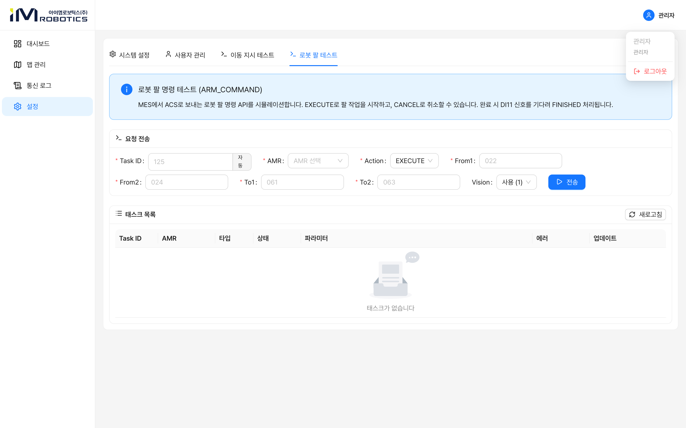
사용자 메뉴
로그아웃을 선택하면 localStorage의 세션 정보가 제거되고 /login 페이지로 이동합니다.
| 상태 | 한글 | 설명 |
|---|---|---|
IDLE |
대기 | 정상 연결됨, 명령 대기 중 |
MOVING |
이동 | 이동 명령 수행 중 |
STOP |
정지 | stop_code 기반 의도적 정지 |
ERROR |
오류 | 에러 발생 (additional_info.errors 참조) |
E-STOP |
비상정지 | 물리 비상정지 버튼 눌림 |
NO_CONN |
연결 끊김 | 네트워크 단절 또는 전원 오프 |
| 상태 | 색상 | 의미 |
|---|---|---|
PENDING |
주황 | 접수됨, 실행 대기 |
RUNNING |
파랑 | 실행 중 |
FINISHED / DONE |
초록 | 정상 완료 |
ERROR / FAILED |
빨강 | 실패 (error_code 참조) |
CANCELLED / CANCELED |
회색 | CANCEL 요청 또는 취소됨 |
본 매뉴얼은 docs/manual/generate.mjs에 의해 실제 화면을 캡처해 자동 생성되었습니다.